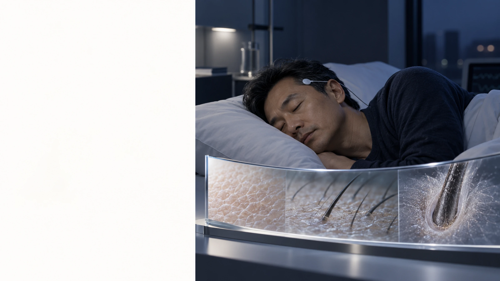
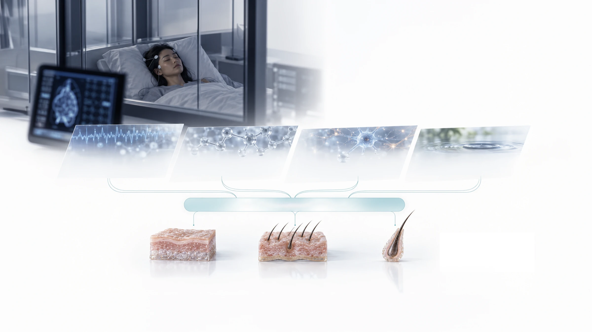
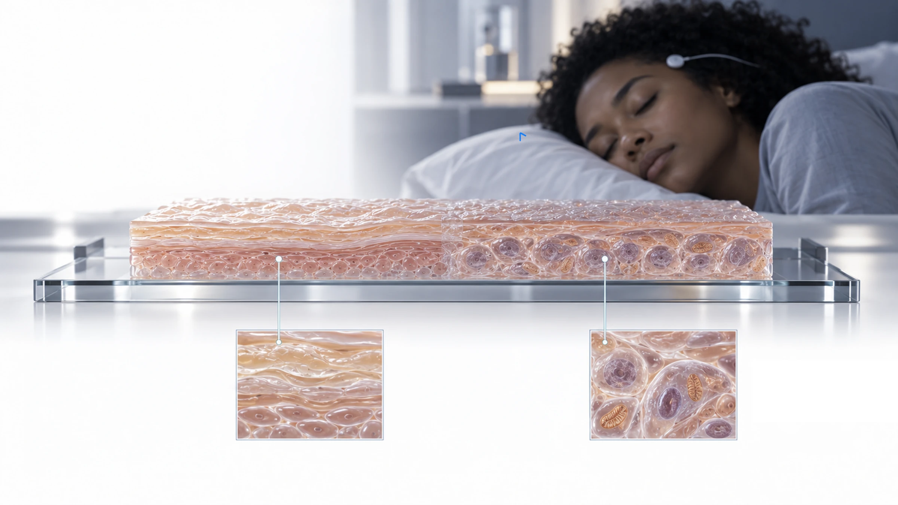
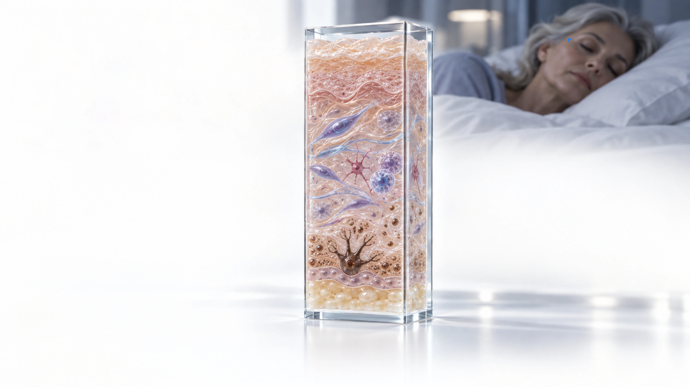
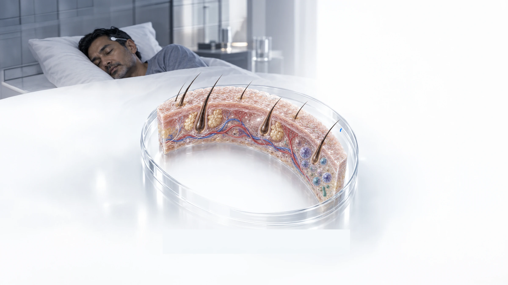
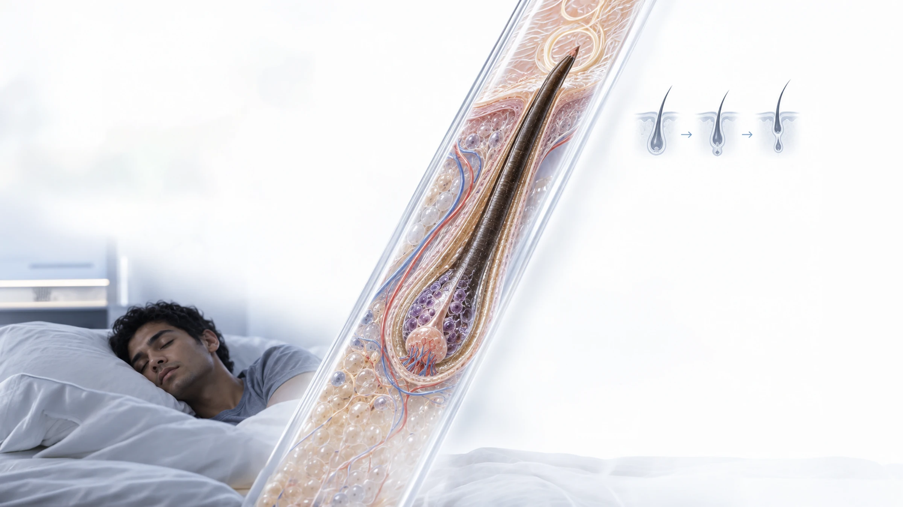
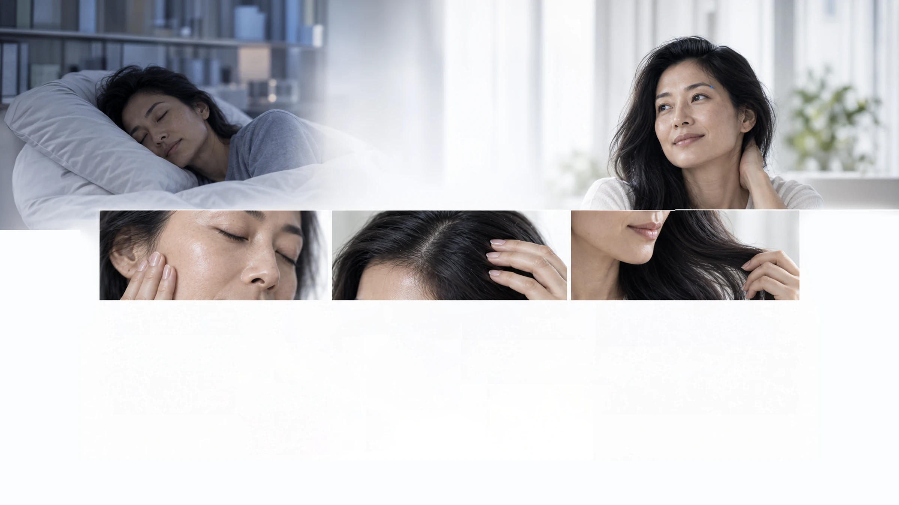

Insights / Sleep × Skin–Hair Beauty
When Rest
Becomes Renewal
A&S investigates how restorative sleep shapes the biological conditions for skin renewal, scalp balance and hair resilience.
Explore the science
Integrated system overview
How Sleep Shapes the Skin–Hair Beauty Axis
Sleep influences skin, scalp and hair through an integrated recovery environment. Four interacting domains shape the biological conditions that support repair, balance and resilience.
-
Sleep quality
Duration · Continuity · NREM–REM balance · Circadian alignment
-
Sleep-dependent signals
Melatonin and cortisol rhythms · Autonomic balance · Immune and metabolic regulation
-
Neurochemical & neuroendocrine regulation
Neurotransmitter balance · Stress-axis regulation · Neurotrophic and endocrine support
-
Sensory–affective context
Sensory environment · Affective state · Stress buffering · Autonomic modulation
Integrated recovery environment

Skin biology
The Skin’s Nighttime Renewal System
During restorative sleep, circadian timing and recovery signaling create a biological window for epidermal maintenance. At the surface, barrier cohesion and cellular renewal work together to restore functional resilience.
-
Cellular renewal
Restoring cellular order
Keratinocyte turnover, DNA-repair activity and mitochondrial maintenance support orderly epidermal repair and renewal.
- Keratinocyte turnover
- DNA repair
- Mitochondrial maintenance

Skin biology
Beyond the Surface: Resilience from Within
Nighttime renewal extends beyond the epidermis. Within the dermis and its surrounding microenvironment, structural maintenance, inflammatory regulation and pigment stability help preserve balanced skin function over time.
-
Dermal matrix support
Maintaining structural integrity
Fibroblast activity supports collagen and elastin maintenance, while balanced extracellular-matrix remodeling helps preserve firmness, elasticity and repair capacity.
Collagen synthesis · Elastin maintenance · ECM remodeling
-
Inflammation control
Restoring a calmer microenvironment
Regulation of cytokine activity, mast-cell reactivity and low-grade inflammation supports recovery and reduces persistent biological stress within the skin.
Cytokine balance · Mast-cell stability · Low-grade inflammation
-
Pigment & tone regulation
Supporting evenness and clarity
Oxidative stability and balanced melanocyte activity help maintain more even pigment distribution, tone and visible radiance.
Melanocyte balance · Oxidative stability · Tone uniformity

Scalp microenvironment
The Scalp as a Living Ecosystem
Sleep-dependent recovery helps maintain the local conditions that surround each follicle. Barrier function, vascular supply and biological balance work together to support a stable scalp microenvironment.
-
Microcirculation
Sustaining local supply
Healthy microvascular function supports oxygen and nutrient delivery to metabolically active tissues surrounding the follicle.
Oxygen delivery · Nutrient supply · Microvascular support
-
Immune, microbiome & oxidative balance
Maintaining a stable environment
Regulated immune activity, microbial balance and antioxidant protection help limit inflammatory and oxidative stress within the scalp.
Immune homeostasis · Microbiome ecology · Oxidative protection

Hair follicle biology
How Healthy Hair Is Formed
During restorative sleep, recovery-related biological conditions support the cellular activity, cycle regulation and structural processes required for normal follicular function and hair-fiber formation.
The hair cycle
- Anagen
- Catagen
- Telogen
-
Follicle cycling
Regulating growth and transition
Coordinated follicular signaling supports the active anagen phase and orderly transition through catagen and telogen.
Anagen activity · Cycle coordination · Follicular resilience
-
Matrix-cell activity
Generating the hair shaft
Rapidly dividing matrix cells differentiate and keratinize to produce the organized structures of the emerging hair fiber.
Cell proliferation · Differentiation · Keratinization
-
Fiber formation & protection
Maintaining structural quality
Keratin organization and antioxidant defense help protect developing follicular cells and preserve the integrity of the formed hair fiber.
Keratin organization · Oxidative protection · Fiber stability

Shared beauty outcomes
The Visible Expression of Nighttime Recovery
Across skin, scalp and hair, restorative sleep supports the biological conditions associated with repair, balance and resilience. These interconnected effects shape how healthy beauty is expressed over time.
Skin
Hydrated · Smooth · Resilient
Stronger barrier function, improved moisture retention, greater softness and elasticity, more even tone and a healthier-looking complexion.
Scalp
Calm · Balanced · Supported
A more stable barrier, balanced sebum and microbial ecology, and a less reactive environment surrounding the follicles.
Hair
Stable · Strong · Healthy-looking
Balanced follicular cycling, resilient fiber formation and improved structural quality of the emerging hair shaft.
Shared Outcomes
- Repair readiness
- Barrier resilience
- Balanced microenvironment
- Radiance & clarity
- Healthy-aging appearance
- Hair-cycle stability